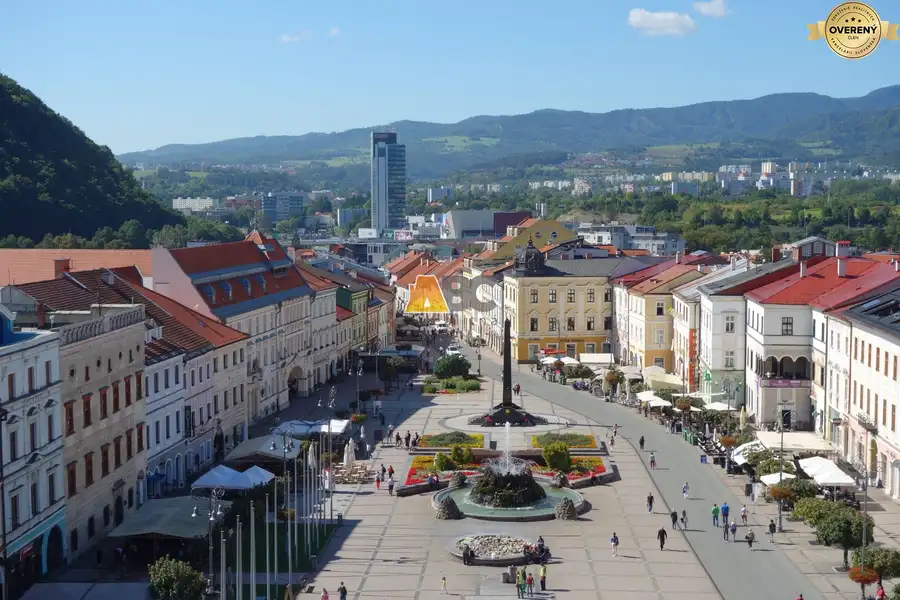

Predaj · Byt
Kúpim 2i alebo 3i byt v BB
Banská Bystrica
150 000 €2 500 € za m²

- Dispozícia2-izbový
- Plocha60 m²
- Poschodie0. z 1
- Stavpôvodný
O nehnuteľnosti
Rozpočet do cca 150 000€ (môže byť aj v pôvodnom stave).
Hypotekárny úver je predschválený – garantujeme rýchlu platbu kúpnej ceny.
Ak zvažujete predaj, kontaktujte ma na .
Parametre
- Úžitková plocha
- 60 m²
- Poschodie
- prízemie
- Počet poschodí
- 1
- Stav
- pôvodný
- Status
- aktívne
- Postavené z
- panel
- Energetický certifikát
- nie
- Dátum zverejnenia
- 2026-09-04
Kde to je
Ďalšie ponuky
Celá ponuka